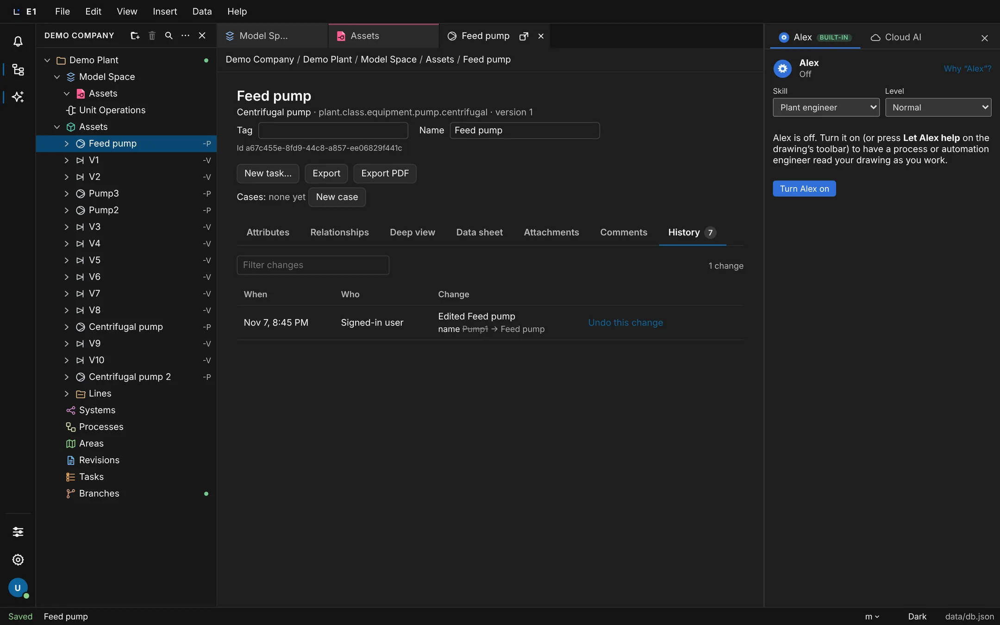
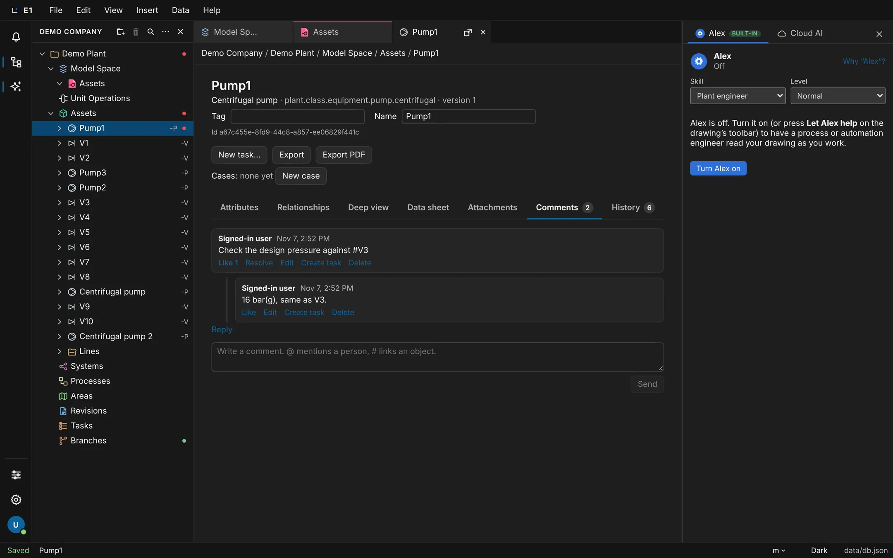
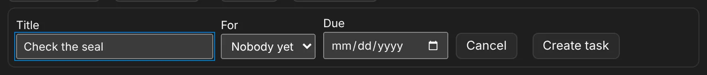
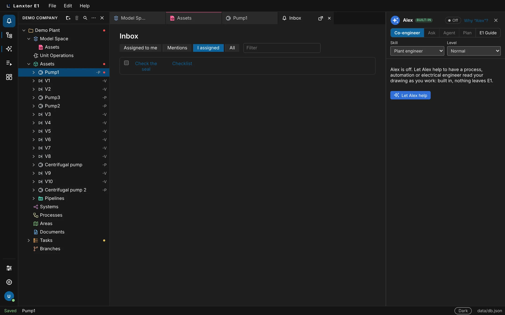
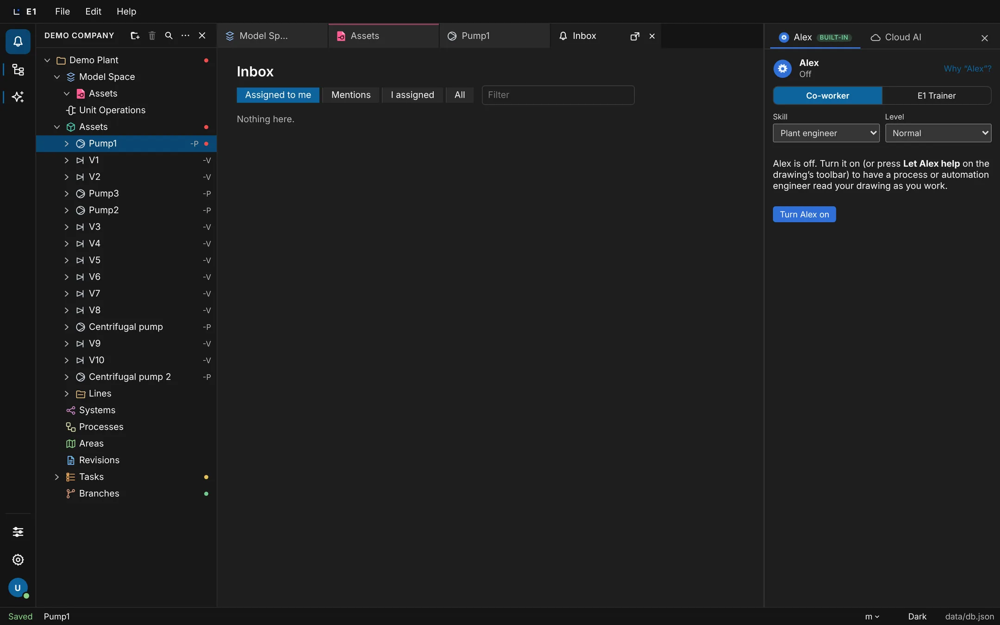
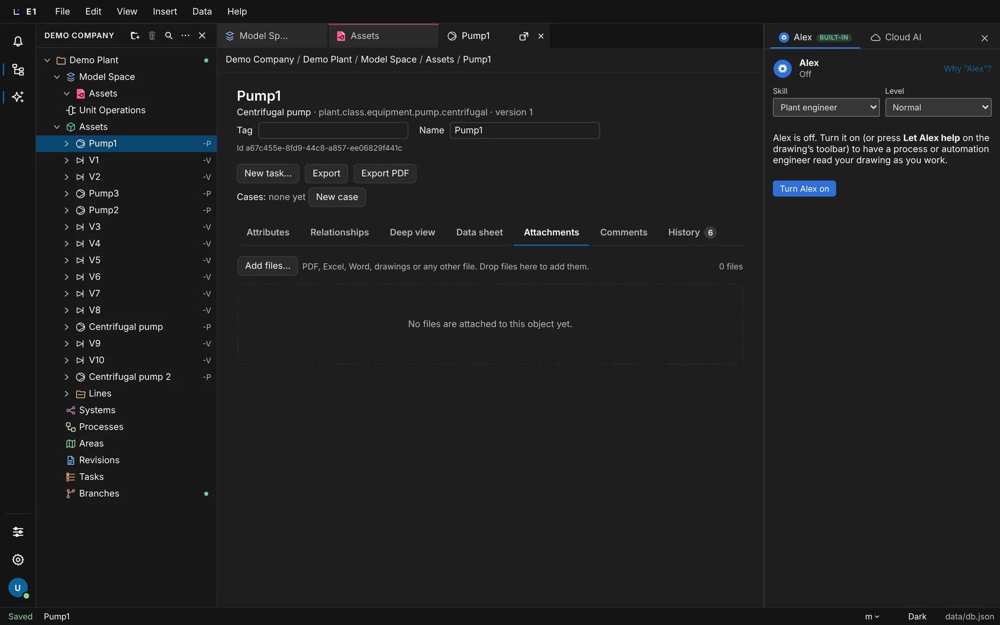
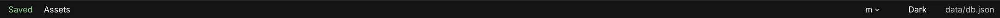

Academy / User guide / Working together
8. Working together
History and undo, comments and mentions, tasks and the Inbox, comments pinned on drawings, attachments and live updates between people.
About this guide
This guide covers how people work together on one E1 project: taking back changes, reading what changed and who changed it, discussing an object in its chat, handing out tasks, following everything in the Inbox, pinning review messages on a drawing, attaching files, and what you see when two people change the project at the same time. It ends with branches, which are planned.
Typical workflow
- Make a change and take it back if needed: Undo and redo.
- See what changed on one object and undo one change: An object's History tab; for the whole project, the History place.
- Discuss an object: Chat, mentions and links.
- Turn a question into work for someone: Tasks.
- Follow mentions, replies and tasks: the Inbox and notification settings.
- Review a drawing: Chat here pins and Needs review.
- Keep the files that go with an object: Attachments.
- Work at the same time as others: live refresh and when two people change the same thing.
Before you start
- Most features here need E1 on a server with sign-in (the cloud app, or a server your company runs). In the desktop app without sign-in, the Inbox says The Inbox needs sign-in. and chat, tasks and notifications are not available.
- What you may do depends on your license and your role on the project. See Project members and roles.
- You know the E1 window and the explorer: The E1 window.
Undo and redo your changes
Undo takes back your last saved change, and Redo puts it back. Each person has their own list of steps, so your Undo never takes back a colleague's work.
- Where
- Edit → Undo (Ctrl+Z (⌘Z)) and Edit → Redo (Ctrl+Shift+Z or Ctrl+Y (⇧⌘Z))
- Who
- Anyone who may make the change; the undo must also be allowed for you now
- Before you start
- A project is open and you have made a change.
What one step is
- Each saved change is one step: a drawing edit, an attribute edit, one paste or fill in a list, a change in the explorer, a catalog re-apply, or a library upgrade.
- Up to 100 steps are kept, one list per person in the open app.
- Chat messages, likes and notifications are not steps: Undo does not take them back, and they do not appear in History.
Steps
| # | Action | Expected result |
|---|---|---|
| 1 | On a 2D space, drag a symbol to a new place. | The symbol moves. The status bar reads Saving…, then Saved. |
| 2 | Click outside any text field, then choose Edit → Undo or press Ctrl+Z (⌘Z). | The symbol goes back to where it was. |
| 3 | Choose Edit → Redo or press Ctrl+Shift+Z (⇧⌘Z). | The symbol moves to the new place again. |
| 4 | In a list, paste several cells from Excel, then press Ctrl+Z (⌘Z) once. | The whole paste is taken back in one step. |
| 5 | Type in a text field, then press Ctrl+Z (⌘Z) while the field still has the cursor. | Only the typing in that field is undone; the project is not changed. |

If someone else has changed the same thing since your step, the undo is refused as a conflict and the step stays in your list. See When two people change the same thing.
Editors with their own draft, such as the datasheet designer, have their own Undo button until you save the draft.
The list of steps is kept in the open app. It is probably lost when you reload the page; this has not been confirmed yet. To take back an older change after a reload, use Undo this change on the object's History tab.
See an object's changes and undo one
Every object has a History tab that lists its changes as a person reads them: when, who, and what changed, with the value before and after. Undo this change takes back one change, even an older one, as long as nobody has changed the object since.
- Where
- Double-click an object in the explorer → tab History. The badge on the tab is the number of changes.
- Who
- Anyone who may view the project reads it. Undo works only when you may make the restored edit now: edit rights in the project, in an organization whose trial has not ended.
- Before you start
- A project with objects is open, for example V3 under Assets.
Steps
| # | Action | Expected result |
|---|---|---|
| 1 | In the explorer, right-click V3 → Rename, type XV-303 and press Enter. | The explorer shows XV-303. |
| 2 | Double-click XV-303, then click the tab History. | While it loads: Reading the history…. Then a table with the columns When, Who and Change. The newest row reads name, the old name struck through, an arrow and XV-303. |
| 3 | Look at what the rows show. | Only the tag, the name and attribute values (for example design pressure / in). Internal ids, ports, placements and class versions are not shown. |
| 4 | Type part of a change in Filter changes. | Only matching rows stay. The count reads N changes; with nothing matching, No change matches. |
| 5 | If more than one person changed the object, choose a name in the Who list (or Everyone). | Only that person's changes are listed. With only one person, the list is not shown. |
| 6 | Click Undo this change on the rename row. | The status Undone. appears. Within a few seconds the explorer shows V3 again. |
| 7 | If the object has many changes, click Older changes at the bottom. | Older rows are added. While more pages exist, the count reads N+ changes. |

An object without changes shows No changes recorded yet.
If someone has changed the object since, the undo is refused with Changed since, so the change cannot be undone: … and nothing changes.
Undo is checked before anything is written. A Viewer or Reviewer, someone without edit rights in the project, or an organization whose trial ended is refused with the reason (Why a change is refused), and nothing changes. A project's activity and its object search need view rights on that project: otherwise You have no access to project <project>.
Projects, folders and 2D spaces also have a History tab, but it lists only the changes the app has loaded, and it has no Undo this change.
The History place: every change in the project
A History place that lists every change in the project in one tab, from the drawing, Alex and outside agents. E1 already contains it, but it has no button on the screen yet, so you cannot open it today.
The History place will list each change with its kind, who made it, when, and a description, with filters for Date (All dates, Today, Last 7 days, On a date), Who, Change and Description. A change made by Alex or an outside agent can be taken back as a whole with Undo this change.
Today, the changes of one object are on its History tab, and Edit → Undo takes back your own changes one by one. A reply from Alex has its own Undo (see Asking Alex in your own words).
Chat about an object: mentions, links, replies and likes
Every object, project, folder and 2D space has a Chat tab where you discuss it. Mention a colleague with @ so they are notified, link another object with #, reply, like, edit and delete your own messages, and resolve a thread when it is settled.
- Where
- The object window → tab Chat. The badge is the number of messages, with a dot when there are new ones.
- Who
- Reading: anyone who may view the object. Writing, replying and liking: Reviewer, Engineer, Lead engineer or Project administrator, with an Editor or Reviewer license (not Viewer). Resolving: Engineer and above. Deleting others' messages: Lead engineer and Project administrator.
- Before you start
- E1 with sign-in. A project with Pump1 and V3. A second person on the project, to see mentions.
Steps
| # | Action | Expected result |
|---|---|---|
| 1 | Double-click Pump1 and click the tab Chat. | No messages yet. and the box Chat message with the placeholder Write a message. @ mentions a person, # links an object. |
| 2 | Type @ and the first letters of a colleague's name. | A list People shows the people who may view the object. Pick one: the mention is inserted. |
| 3 | Type #V3. | A list Objects appears. Pick V3: the link #V3 is inserted. |
| 4 | Click Send or press Ctrl+Enter (⌘Enter). | The message appears with your name, the time and the #V3 link. Clicking the link opens V3. The mentioned colleague gets an Inbox notice. |
| 5 | Click Reply under the thread, type 16 bar(g), same as V3. and click Reply. | The reply appears indented under the message. Threads are one level deep. |
| 6 | Click Like on the first message. | It reads Like 1 and looks pressed. Click again to take the like back. |
| 7 | On your own message click Edit, change the text in the box Edit message and click Save (or Cancel). | The new text shows with a small edited mark; hovering it shows when. |
| 8 | Click Resolve on the thread. | The thread folds and shows Resolved, with Reopen. |
| 9 | Click Delete on your own message and confirm Delete this message? with OK. | The message is gone. If it started a thread with replies, it reads Message deleted. |
| 10 | Signed in as the colleague in a second browser, keep Pump1's Chat tab open while the first person sends a message. | The message appears within about 3 seconds without reloading, marked New. |

- A message Alex wrote with its AI help shows the author with (via Alex’s AI help).
- A message pinned on a drawing shows Pinned on a 2D space (see Chat here).
- A message removed by a moderator shows Removed by a moderator.
- Create task on any message starts a task from it (see Tasks).
Without permission to write in the chat, the box is hidden and the tab says You can read this chat; your role on the project does not include writing in it. The Reviewer role can write messages but cannot resolve.
A message can be up to 10 000 characters, and one person can send up to 30 messages a minute.
Give someone a task
A task asks one person to do something about an object, with an optional due date. It is kept in the project's Tasks section, the object shows that it has open tasks, and the person sees it in their Inbox and marks it done there.
- Where
- The object window header → New task…; or Create task under a message; or the explorer's Tasks section → New task…
- Who
- Creating: Engineer and above. The person it is for must be able to view the object. That person may mark their own task done whatever their role.
- Before you start
- E1 with sign-in; a colleague on the project.
Steps
| # | Action | Expected result |
|---|---|---|
| 1 | Double-click Pump1 and click New task… beside Export. | The form New task opens with the fields Title, For and Due. |
| 2 | Type Check the seal as the title. In For choose a colleague (or leave Nobody yet). Set Due to 2026-12-01. | Create task becomes active once there is a title (at most 300 characters). |
| 3 | Click Create task. | The form closes. The Tasks section in the explorer and Pump1 show the mark Open tasks: 1. The colleague gets assigned you a task in their Inbox. |
| 4 | Under a message on the Chat tab, click Create task. | The same form opens with the first 80 characters of the message as the title. |
| 5 | Click the bell on the left rail → I assigned. | Check the seal is listed with Due 2026-12-01 (red when it is late). |
| 6 | Tick the checkbox in front of the task (its name is Done: Check the seal). | It is ticked and the task shows as done. The Open tasks mark goes away. Clicking the title opens Pump1. |
| 7 | Open the Tasks section and use its filter button All → Done, then Open. | The lists Tasks: Done and Tasks: Open. An empty list reads, for example, No done tasks. |


The person gets an email for a new task by default; the one who assigned it is told in the app when it is done. Change this in notification settings.
The object window does not yet show the number of open tasks in its header; look at the mark in the explorer.
The Inbox: mentions, replies and tasks
The bell at the top of the left rail opens your Inbox: the tasks for you, the messages that mention you, the tasks you gave others, and every notice. Its badge counts what you have not read yet.
- Where
- Left rail → the bell Inbox (top button)
- Who
- Every signed-in person, for their own notices
- Before you start
- E1 with sign-in. Without it the place says The Inbox needs sign-in.
Steps
| # | Action | Expected result |
|---|---|---|
| 1 | Have a colleague mention you in a chat message. Look at the bell. | Within about 15 seconds the bell shows a badge with the number of unread notices (99+ above 99). |
| 2 | Click the bell. | A tab Inbox opens on Assigned to me: your open tasks first, by due date. |
| 3 | Click Mentions. | A line such as <name> mentioned you with the object. As soon as a notice is listed in an Inbox view it counts as read, and the badge goes down. |
| 4 | Click the line. | The object opens on its Chat tab. |
| 5 | Click I assigned, then All. | I assigned lists the tasks you gave others; All lists every notice (also replied to your comment, assigned you a task, marked your task done). |
| 6 | Type a word in Filter. | Only matching lines stay; with none: Nothing here. |

Owners and Administrators also get the seat notice E1 counted the seats here (see Licenses and seats).
The list refreshes every 10 seconds and the badge every 15 seconds, so a new notice may take a moment to show.
Choose which notices come by email
Mentions, replies and tasks always show on the bell. In your settings you choose, for each kind, whether it also comes by email.
- Where
- Left rail → Settings (the gear) → card Notifications
- Who
- Every signed-in person, for themselves only
- Before you start
- E1 with sign-in.
Steps
| # | Action | Expected result |
|---|---|---|
| 1 | Click the gear Settings on the left rail. | The Settings tab, with the card Notifications: Mentions and replies always show on the bell. Choose which also come by email. |
| 2 | Read the four rows. | When someone mentions you in a chat, When someone replies to your message and When someone assigns you a task are on Email me; When a task you assigned is done is on In the app only. |
| 3 | Click In the app only on the mentions row. | It is selected. A later mention shows on the bell but sends no email. |

The seat notices for administrators come in the app only, never by email.
Pin a message on a drawing: Chat here and Needs review
During a drawing review you pin a message right where the question is. The pin is numbered on the 2D space, the object shows Needs review in the explorer until the message is resolved, and the discussion continues on the object's Chat tab.
- Where
- On a 2D space: right-click a symbol or an empty spot → Chat here
- Who
- Pinning: anyone who may write in the chat. Resolving: Engineer and above (Reviewers and Viewers are refused).
- Before you start
- E1 with sign-in; the 2D space with Pump1 is open.
Steps
| # | Action | Expected result |
|---|---|---|
| 1 | Right-click Pump1 on the 2D space. | The menu shows Chat here. |
| 2 | Click Chat here. | A card Pin a message with A message on Pump1, pinned here and the box Chat message. |
| 3 | Type Is the suction size right? and click Pin message. (Cancel or Esc closes the card without pinning.) | A pin numbered 1 appears on the 2D space. |
| 4 | Look at Pump1 in the explorer. | It shows the mark Needs review: 1 unresolved comment (at once in your window; in others within 30 seconds). |
| 5 | Click the pin. | A card with the author, on Pump1, the text, the number of replies and the buttons Resolve, Open discussion and Close. |
| 6 | Click Open discussion. | Pump1 opens on its Chat tab; the message reads Pinned on a 2D space. |
| 7 | Back on the 2D space, click the pin and then Resolve. | The pin shows as resolved, the Needs review mark disappears, and the card offers Reopen. |


Pins are not printed in the 2D space PDF. The mark Under merge review is not built yet; it comes with branches (see Branches).
Attach files to an object or a project
Keep vendor datasheets, calculations, Excel files and drawings with the object they belong to. Files added to a project, folder or 2D space are how you upload files to a project. PDFs show in a preview right away.
- Where
- The object window → tab Attachments (also on projects, folders and 2D spaces)
- Who
- Anyone with a role on the project opens the files; adding and removing follow your role on the project
- Before you start
- E1 on a server with file storage; a PDF on your computer.
Steps
| # | Action | Expected result |
|---|---|---|
| 1 | Double-click Pump1 and click Attachments. | No files are attached to this object yet. and the hint PDF, Excel, Word, drawings or any other file. Drop files here to add them. |
| 2 | Click Add files… and pick a PDF (or drop it on the tab). | The button reads Adding…; then the file is listed with its type, size, when and by whom it was added, and Open and Remove. The count reads N files. |
| 3 | Look at the preview. | The PDF shows at once. With several PDFs, clicking another file's name (Show in the preview) switches to it, for example PDF 2 of 3. |
| 4 | Reload the page and open the Attachments tab again. | The file is still there. |
| 5 | Click Remove and confirm Remove <file> from Pump1? The file is deleted. with OK. | The file is gone from the list. |

Someone without a role on the project cannot open the file: it answers as not found.
The storage your organization has used is shown in File → Organization… as Files: x GB of y GB used. A trial has 5 GB.
See others' changes live
When several people have the same project open, each one sees the others' changes within a few seconds, without reloading. Your own changes that are still being saved are kept.
- Where
- Everywhere in the project: the explorer, 2D spaces, object windows, lists
- Who
- Everyone with a role on the project
- Before you start
- E1 with sign-in; two people (Anna and Ben) signed in on the same project in two browsers.
Steps
| # | Action | Expected result |
|---|---|---|
| 1 | Anna renames Pump2 to Booster pump in the explorer. | Anna's status bar reads Saved. |
| 2 | Ben watches his explorer without reloading. | Within a few seconds Ben sees Booster pump. |
| 3 | Anna moves a symbol on the 2D space that Ben has open. | Ben sees it move within a few seconds. |
| 4 | Anna writes a message on Pump1 while Ben has its Chat tab open. | The message appears for Ben within about 3 seconds. |
How quickly things arrive: project changes about every 1.5 seconds, chat messages every 3 seconds, the Inbox every 10 seconds, the bell every 15 seconds, pins and Needs review marks every 30 seconds.
A new version published in the company library reaches another open window only when it is reloaded.
When two people change the same thing
E1 saves each object on its own. If two people change the same object at the same time, the first change is kept and the second is refused with a clear message, and the second person's copy is reloaded so they see the current state.
- Where
- The save state at the left of the status bar
- Who
- Everyone
- Before you start
- Two people signed in on the same project.
The save states
- Loading, Saving…, Saved: normal work.
- Changed elsewhere — reloaded: someone changed the same object first. Your change to it was dropped and the current version is shown.
- Change refused: the change is not allowed (your role, a read-only organization, or an invalid edit). The reason is shown beside it.
- Save failed: the change could not be saved.
Steps
| # | Action | Expected result |
|---|---|---|
| 1 | Anna and Ben open Pump1's Attributes tab at the same time. | Both see the same values. |
| 2 | Both change Design pressure to different values and save at almost the same moment. | One value is kept. The other person's status bar reads Changed elsewhere — reloaded and shows the kept value. |
| 3 | In a list, Ben pastes values into rows that Anna changed a moment before. | The paste is refused with N rows were changed by someone else since; nothing was changed. |

Other messages of the same kind: an undo that meets a newer change reads Changed since, so the change cannot be undone: …; a change to a whole project reads The project was changed by someone else. Reload and try again.
See who else has a sheet open
When colleagues have the same 2D space open, their avatars appear at the right of the sheet toolbar, with a pencil while they are editing it. Not built yet.
Planned for M4: People on this sheet in the sheet toolbar, a click opens On this sheet with each person's role, Viewing or Editing, and since when. You never see anyone's pointer or unsaved work, and nothing about who opened what is recorded. With Configuration → Privacy → Groups only, groups are shown instead of names, and Show who has a sheet open turns it off for the organization.
Messages (direct messages)
Direct messages between the people of an organization. They are not connected yet and have no button on the screen.
A Messages place to write to colleagues directly. Until then, talk about an object in its chat with @mentions.
Branches: work apart, then push your changes
A branch is your own working copy of part of the design. You change it without others seeing your work, pull in their changes, resolve conflicts object by object, and push the result back to the shared design. This is planned for the Branches milestone; today every change goes straight into the shared design.
- Where (today)
- Each project has a Branches section in the explorer. It is an empty folder.
Planned in the Branches milestone, not started:
- Branch records and scope (15.1)
- Working in a branch (15.2)
- Pull and the conflict view (15.3)
- Conflicts on the drawing (15.4)
- Push and update notices (15.5)
- Alex’s changes in your own branch, and its changes held for review as a temporary branch (17.1, 17.2)
What you will be able to do
- Create a branch from part of the design and see it in the branch list.
- Work in it: your changes are not seen in the shared design until you push them.
- Pull others' changes into your branch and resolve conflicts object by object, also on the drawing itself.
- Push your branch back and see others get a notice of the update.
- Ask Alex for a change and have it made in your branch, not in the shared design.
Branches will be part of the Editor license, not an extra to buy. With a Reviewer license you will be able to look at a branch, compare it and approve it when asked; with a Viewer license you can look at a branch you are a member of.
Today the Branches section's New branch button does nothing and its filter (All, Procurement, Construction) only changes its label. The section always shows a status dot titled Open branch, even when it is empty. Both are listed under Help → Under construction.
Merge requests, branch types and branch permissions
Once branches exist, a branch goes back into the shared design through a merge request that a colleague reviews. Branch types, automatic resolution rules, branch packages and permissions for who may push and approve follow.
Planned in the Branches milestone, not started: branch types and options (16.1), merge requests (16.2), automatic resolution rules (16.3), branch packages such as a commissioning package (16.4), and branch push and approval permissions (09.6b).
What you will be able to do
- Create branches of different types, for example design or commissioning, with their own options.
- Open a merge request, have a colleague review it, and merge it.
- Set an automatic resolution rule so that conflicts of that kind are resolved without asking.
- Set who may push a branch or approve a merge request.
- See objects changed in a branch with an open merge request marked Under merge review in the explorer.
- Cut finished equipment out of a larger branch as a commissioning package, with a commissioning list and a marked-up P&ID, and push only that part to the shared design. A commissioned package is read-only until you reopen it.
The Reviewer license and the Lead engineer role already include approving branches, ready for this. Merge requests, branch types and branch packages will be part of the Editor license, not an extra to buy.